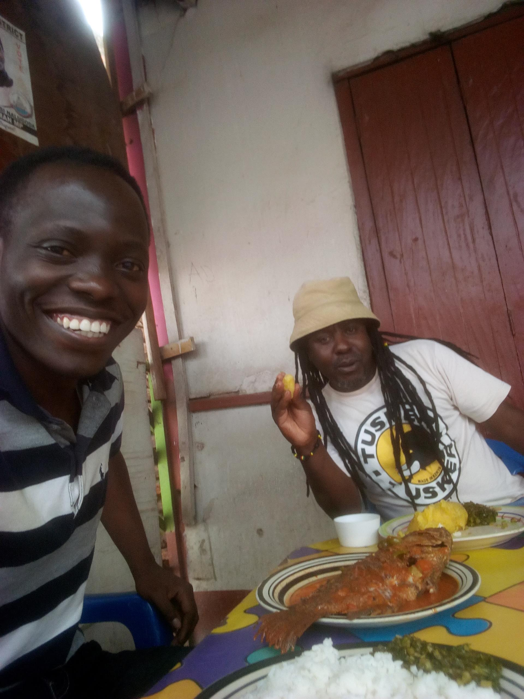
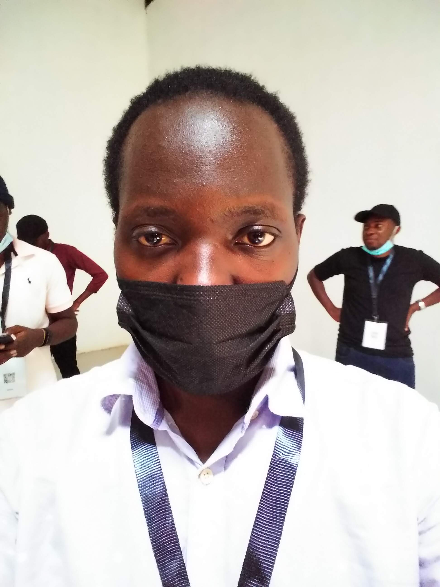
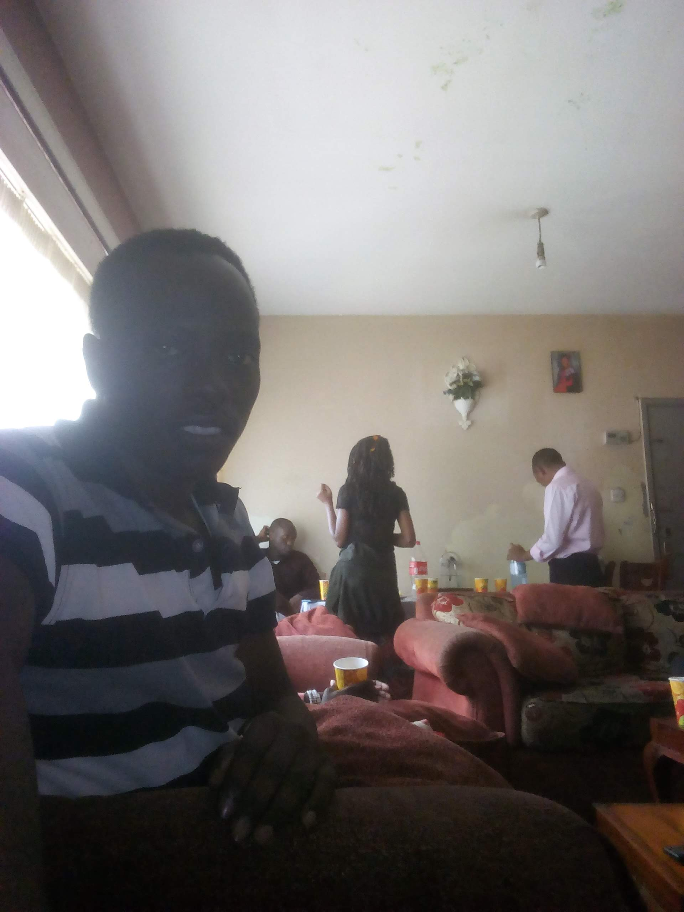
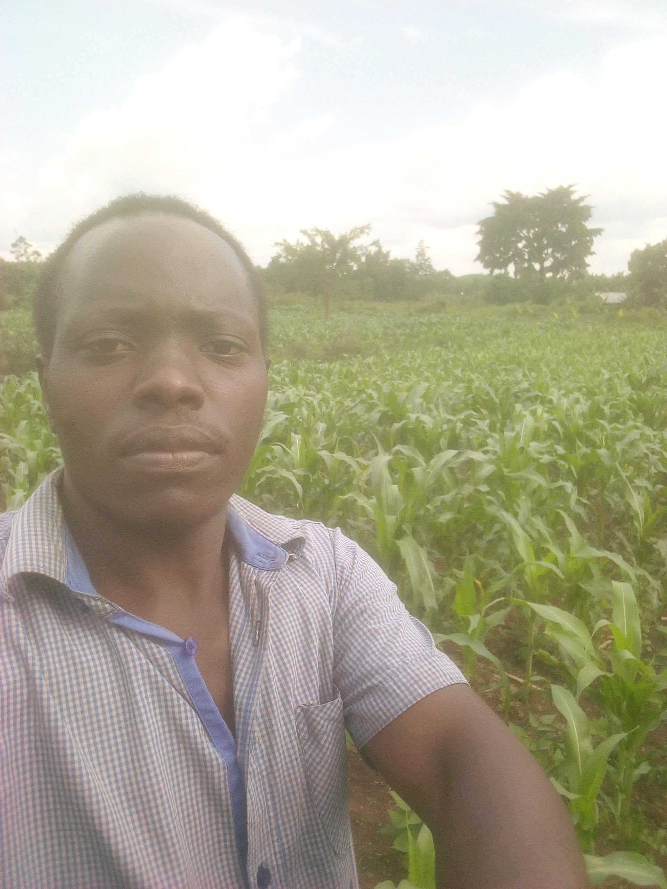
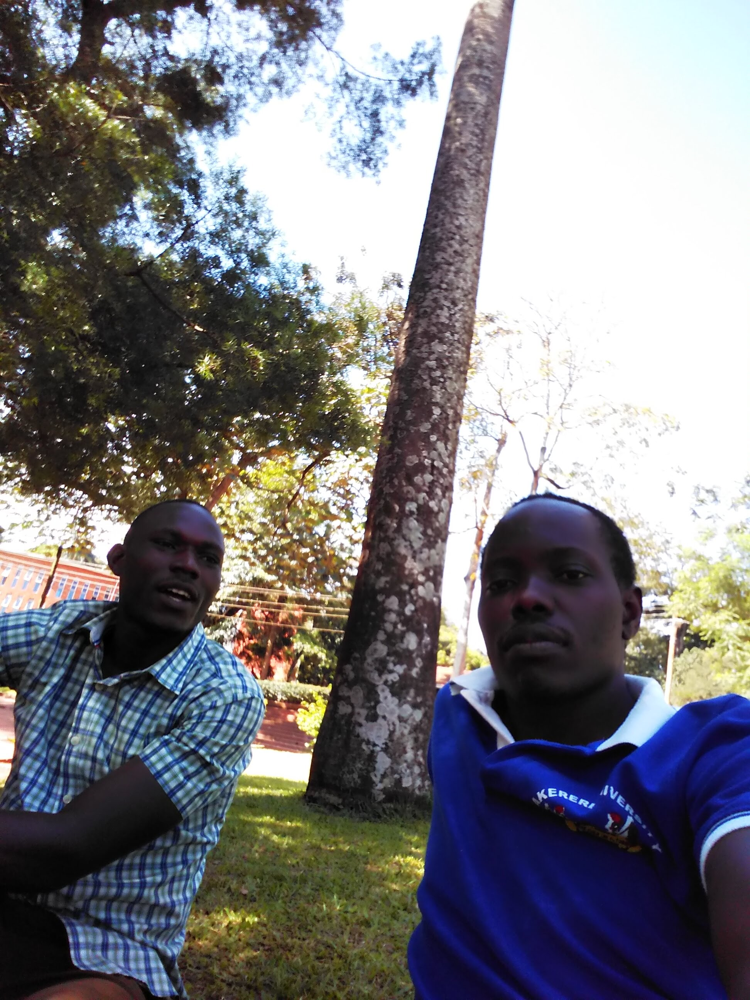

I love to travel
Travelling to places within the country promotes local tourism, this is around lake Victoria where by fish was the dish
I have interest in attending summits such as Tech Expos,conferences, board games and so on.
The photo shows a selfie I took on an opensource summit I attended a while ago
Fellowship and church services including Bible study
Farming
Farming is good for food security and it also brings in incomes incase of bumper harvests
Taking a walk
Me and my friend after along walk, we decided take a rest under the tree shades
Playing with pets
These kind of dogs are hard to find in rural areas but they are such good company